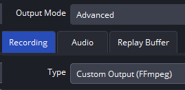
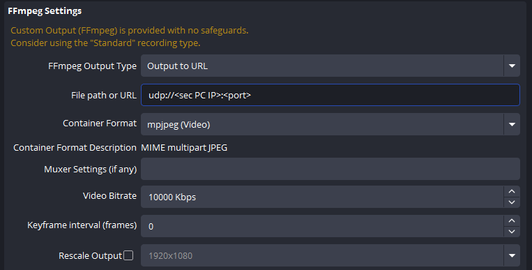
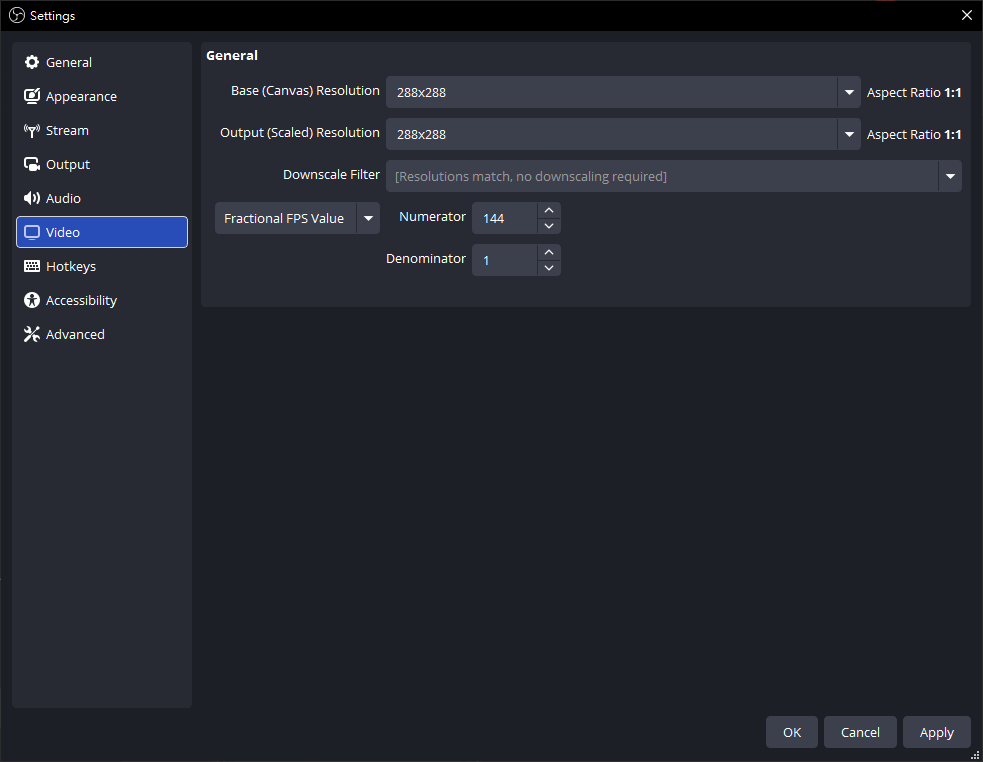
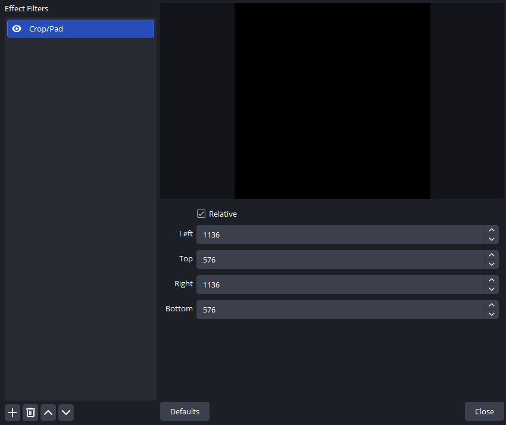
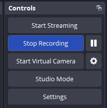

OBS UDP Setup
Shared guide index: lang.md
Follow these steps to stream your cropped FOV from the main PC to the secondary PC via UDP.
Step 1: Configure FFmpeg URL
Path: Settings -> Output -> Recording

Set:
Output ModetoAdvanced.TypetoCustom Output (FFmpeg).FFmpeg Output TypetoOutput to URL.File path or URLto:
udp://<sec PC IP>:<port>
Example:
udp://192.168.0.1:1234
Notes:
<sec PC IP>is the IPv4 address of your secondary PC.<port>is any unused port you choose, and a 4-digit port is recommended (for example1234,2345).
Step 2: Container and Encoding Settings
Use:
Container Format:mjpeg (Video)Container Format Description:MIME multipart JPEGKeyframe interval (frames):0
Other fields can stay at defaults initially.

Step 3: Set Resolution and FPS (FOV size)
Path: Settings -> Video

Set:
Base (Canvas) Resolutionto your FOV value corresponding resolution. For example, when FOV is128, set it to128x128.Output (Scaled) Resolutionto your FOV value corresponding resolution. For example, when FOV is128, set it to128x128.FPShigher than144.
Recommended FPS values: 160 / 165 / 180 / 240 (based on GPU performance).
Important: Both Base (Canvas) Resolution and Output (Scaled) Resolution should be set to the resolution corresponding to your FOV value (e.g., when FOV = 128, set to 128x128).
Note: The table below shows the format of the FOV-size table. In the FOV-size table, Base Resolution corresponds to your desktop/game resolution, and Cropped Resolution is used to fill the OBS Filter Crop/Pad (see Step 4).
Example (FOV = 128, corresponding to FOV-size table):
| FOV | Base Resolution | Cropped Resolution |
|---|---|---|
| 128 | 1920x1080 | 896x476 |
Step 4: Apply Crop/Pad Filter
To send only the FOV region:
- Select your
Game CaptureorDisplay Capturesource in OBS. - Click
Filters. - Add
Crop/Pad. - Fill crop values (Left/Top/Right/Bottom) according to your FOV-size table:
- The
Cropped Resolutionin the FOV-size table is used to fill the OBS FilterCrop/Padvalues. LeftandRightcorrespond to the first value (width) in theCropped Resolutioncolumn of the FOV-size table.TopandBottomcorrespond to the second value (height) in theCropped Resolutioncolumn of the FOV-size table.
Example (FOV = 128, Desktop/Game Resolution = 1920x1080):
According to the FOV-size table, when desktop/game resolution is 1920x1080 and FOV is 128, Cropped Resolution is 896x476. This 896x476 is used to fill the OBS Filter Crop/Pad:
- Left = 896
- Top = 476
- Right = 896
- Bottom = 476
Note:
- In the FOV-size table, find the table that matches your desktop or game resolution (e.g., 1920x1080).
- Then select your desired FOV value (e.g., 128).
- The corresponding Cropped Resolution (e.g., 896x476) is the value used to fill the OBS Filter Crop/Pad.
This prevents oversized frames and reduces UDP drop risk.

Step 5: Start Recording (Start UDP stream)
When everything is set correctly, click Start Recording.
OBS will begin sending the UDP stream from the main PC to the secondary PC.

Secondary PC Setup
Use the exact same IP and port values used in OBS.
Example:
- OBS output URL:
udp://192.168.0.1:1234
- Secondary PC input:
IP:192.168.0.1Port:1234
If any value does not match exactly, the stream will not be received.
How to Find Secondary PC IP
- Press
Win + R, typecmd, and press Enter. - Run:
ipconfig
- Find
IPv4 Addressunder your active adapter.
Why frame queue is empty appears
Common causes:
- Main PC and secondary PC are not connected on network.
- OBS recording was not started.
- IP or port is incorrect in UI.
- OBS output/filter/encoder settings are wrong.
Check connectivity both directions:
ping <secondary PC IP>
ping <main PC IP>
Extra Note for UDP Users
UDP still requires Crop/Pad. Without cropping, frame size can be too large for stable transport, causing empty queues or dropped frames.
Gray screen with frequent error: Corrupt JPEG data: premature end of data segment
Cause: FPS is too high and decoder cannot keep up.
Fix:
- Lower OBS FPS.
- Prioritize stable decode first, then increase FPS gradually.
FOV Size Reference
See: FOV-size.md